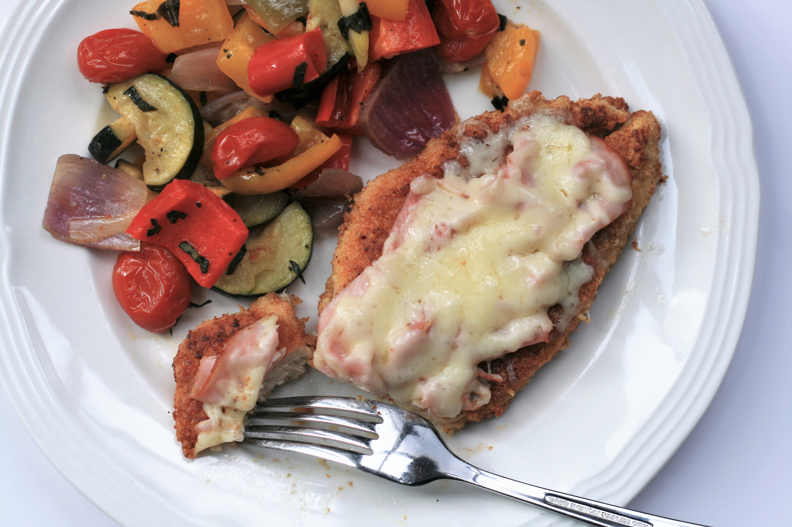

Keto Chicken

Keto Chicken
Ready in 30 minutes. "All the flavors of traditional cordon bleu but keto friendly and much easier to assemble since there is no stuffing or rolling involved," says France C.
Ingredients
- 1 pound chicken cutlets, pounded to 1/4-inch thickness
- salt and freshly ground black pepper to taste
- 2 eggs
- 1 teaspoon Dijon mustard
- ⅔ cup almond flour
- ⅓ cup freshly grated Parmesan cheese
- ½ teaspoon garlic powder
- ¼ cup avocado oil
- ¼ pound shaved deli ham
- 1 cup shredded Swiss cheese